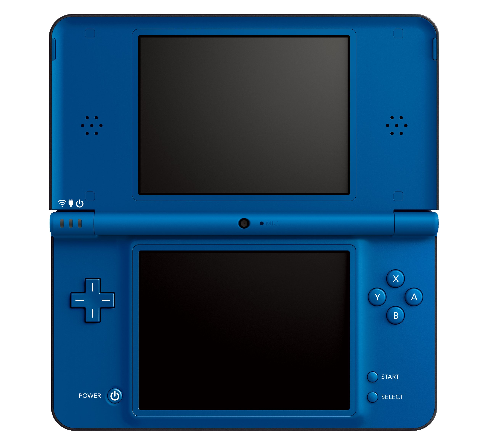

🕹️ Catálogo Premium | Colección OLEA3D
🕹️ SALÓN ARCADE (RECREATIVAS)

🎮 NES

🕹️ NINTENDO 64

⚡ MEGA DRIVE

⭐ SNES

📱 GAME BOY ADVANCE

📱 NINTENDO DS



🕹️ DESBLOQUEA EL PASADO: PASA TU LLAVERO Y ACTIVA EL INSERT COIN
📸 Síguenos en @olea3d

| POS | JUGADOR | PUNTOS |
|---|
Has agotado tus 2 partidas de prueba gratuitas.
Para desbloquear la Enciclopedia Premium y jugar sin límites, acerca tu Llavero NFC oficial al móvil.
¿Aún no tienes el tuyo?
Consíguelo físicamente en el Pub La Beltraneja o en la Cafetería Garden.
¿Tienes un código de acceso VIP?